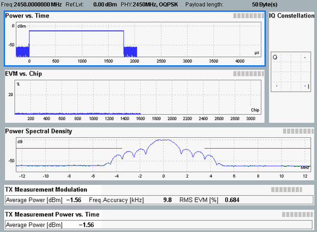

Overview
In the overview a selection of the following results can be displayed:
- Power vs time
- Absolute and offset error vector magnitude vs chip
- Power spectral density
- TX measurement scalar results: modulation
- TX measurement scalar results: power vs time
See also: "TX Measurements"

Multi-evaluation: overview
The results to be measured and displayed in the overview can be limited using the hotkey "Multi-Evaluation" > "Assign Views".
Diagrams in the overview can be expanded in order to obtain a detailed view with additional measurement results, see "Selecting and Modifying Views".
See also: "Using Markers".